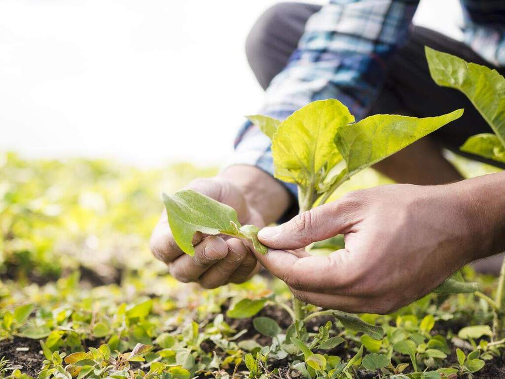

Descubra como a HortSoy e a Bayer Impulsionam sua Produtividade Agrícola

Descubra como a HortSoy e a Bayer Impulsionam sua Produtividade Agrícola
Na HortSoy, entendemos os desafios diários do agricultor. Por isso, em parceria com a Bayer, trazemos soluções inovadoras que vão além do básico. Nossos insumos, combinados com a expertise Bayer, são projetados para otimizar cada etapa do seu plantio, desde a preparação do solo até a colheita. Queremos que você não apenas produza, mas que alcance o máximo potencial da sua lavoura. Explore nossas dicas e produtos e veja a diferença que a parceria HortSoy e Bayer pode fazer no seu campo!

Benefícios da Parceria HortSoy e Bayer
A parceria HortSoy e Bayer oferece um pacote completo para o agricultor, desde sementes de alta performance até soluções de proteção de cultivos de última geração. Isso significa maior resistência a pragas e doenças, plantas mais vigorosas e, consequentemente, colheitas mais abundantes.
Produtos e Soluções que Transformam sua Produção
Descubra as sementes HortSoy, geneticamente melhoradas para se adaptarem às diversas condições climáticas e de solo, e que, combinadas com os defensivos agrícolas Bayer, garantem a sanidade da sua lavoura durante todo o ciclo.
Explore as soluções digitais Bayer, como o Climate FieldView™, que, integradas aos nossos insumos, oferecem um monitoramento preciso da sua lavoura, permitindo decisões mais assertivas e otimização de recursos.
Como Maximizar sua Produtividade?
Visite nosso site ou entre em contato com um de nossos consultores para saber mais sobre as soluções HortSoy e Bayer e como podemos impulsionar a produtividade da sua lavoura. Não perca tempo, comece hoje mesmo a transformar seus resultados!
Participe dos nossos workshops e treinamentos em parceria com a Bayer e aprenda as melhores práticas para maximizar o potencial da sua produção agrícola.